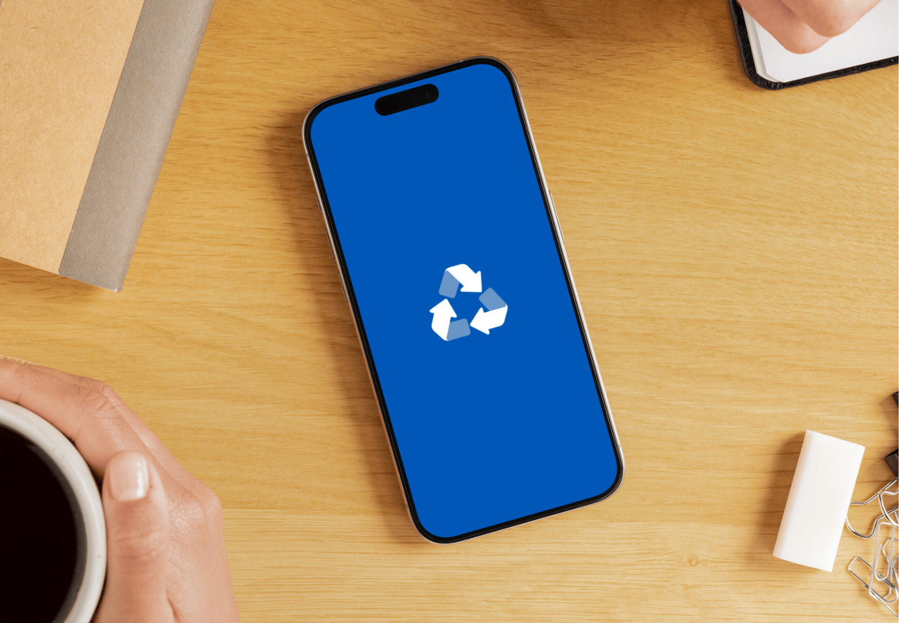
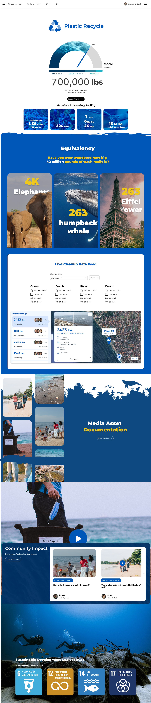

VISUAL SYSTEM & UI DESIGN
Design System
A reusable visual foundation created to keep the 4ocean dashboard consistent, structured, and scalable across screens and interactions.

Risa Rahayu
Loading experience…
Improved donors engagement with real-time clean-up data.
Enhanced transparency of environmental clean-up efforts.



4ocean is a mission-driven organization operating at the intersection of environmental impact and global commerce. As the organization scaled, its digital platform struggled to keep up with growing operational and communication needs.
The existing setup was built incrementally over time, resulting in fragmented user journeys, limited flexibility, and increasing maintenance overhead. While the mission remained strong, the digital experience no longer reflected the scale, clarity, and credibility of the organization.
Duration
6 Months
Timeline:
Phase 1:
Planning & Discovery
Phase 2:
Requirement Analysis
Phase 3:
UI Design
Phase 4:
Development & Testing

Responsibility : Collect and record daily waste collection data in the field.
Cleanup teams conduct waste collection
activities across
assigned locations
, including
collecting waste in the field, transporting it to the facility, sorting and categorizing the
collected materials, and weighing each category of waste.
This process allows the team to separate mixed
waste
and produce clean, measurable
data based on the type and weight
of the materials collected.
All activity data, including the cleanup location, collection activities, waste categories,
and final weights, is manually recorded in
paper logbooks
during or after the cleanup
process.
The completed logbooks are then submitted to the Team Captain for reporting and further
processing.

Responsibility : Get data from Cleanup Team, monitor, validate, and report operational performance data.
After receiving the paper logbooks and reports
from the field teams, 4ocean Admin manually
reviews, compiles, and recaps the data from multiple cleanup activities and
locations.
The information is then organized and processed for operational monitoring, reporting, and
impact tracking, with the entire workflow still relying on manual, paper-based documentation
rather than a centralized digital system.
Then the admin will send the report manually and
personally

Responsibility : Track environmental impact and operational transparency.
Donors rely on impact and operational reports provided by 4ocean, typically in PDF
format, to review environmental performance and
assess the organization's measurable impact.
They use these reports to understand the results of cleanup operations, track progress over
time, and evaluate whether the organization's reported impact is supported by transparent
and reliable data.
Cleanup teams need a standardized and efficient way to record and submit cleanup data because paper-based logbooks make data collection inconsistent, difficult to manage, and prone to delays when multiple teams conduct cleanup activities simultaneously across different locations.
4ocean Admins need a more efficient and centralized way to collect, review, and consolidate cleanup data because manually processing paper logbooks from multiple teams and locations is time-consuming, difficult to standardize, and can result in delayed or scattered information.
Donors need more transparent and accessible visibility into 4ocean's environmental impact and operational performance because relying on static PDF reports limits their ability to track measurable impact, understand ongoing activities, and access up-to-date information about how impact is being created.
How might we help cleanup teams collect and submit standardized field data more efficiently across multiple cleanup locations?

A Digital Collection Application (DCA) for field data entry
How might we enable 4ocean Admins to automatically centralize and synchronize cleanup data from multiple teams and locations?

A centralized database for automated synchronization
How might we provide 4ocean stakeholders with real-time visibility into cleanup operations and environmental impact data?

A real-time operational dashboard for monitoring and analytics
How might we give donors secure and transparent access to real-time environmental impact and operational data while ensuring access is limited to their own relevant data?

Role-based access control for Team, Admin, and Donors
👋 Hi, there! this is a bit challenge to see the wireframe. Please click the picture and zoom in to see it.
Stakeholder :
Cleanup Team
Start Cleanup Flow:
Login →
View Cleanup List → Create New Cleanup →
Double Check Location → Take Pre-Cleanup Photo →
Start Cleanup

Stakeholder :
Cleanup Team
During Cleanup Flow:
Cleanup Ongoing →
Capture Progress Photos → Submit Progress Photos

Stakeholder :
Cleanup Team
Finishing Cleanup Flow:
Capture Post-Cleanup Photo →
Enter Daily Cleanup Data → Review →
Submit Finish Cleanup

Stakeholder :
Cleanup Team / Warehouse Team
Waste Sorting Flow:
Get QR Code →
Scan Barcode at Facility → Add New Cleanup →
Input Total Weight → Upload Weight Photo →
Sorter Review Cleanup → Input Sorting Data →
View Sorting Summary

Stakeholder :
Donors / 4Ocean Management
Dashboard / Report Flow:
Note: This is dummy data.
Login →
View Latest Impact Summary → View Cleanup Data Table →
View Cleanup Map → View Impact Spotlight

| Area | Issue | New Direction |
|---|---|---|
| Field Data Collection |
Dozens team manually recorded daily collection result on paper |
Each team member inputs data directly into the Digital Collection Application(DCA) |
| Data Consolidation |
Manual recording of each bag leads to inconsitent data and no tranparency in verification |
Data is automatically synced to a centralized system. One bag, one photo, ensuring transparent weigth verification and proper process documentation |
| Impact Transparency |
Time-confuming reporting process after field operations |
Reporting time is significantly reduced |
|
No real-time visibility of total team progress |
Real-time visibility of team performance |
VISUAL SYSTEM & UI DESIGN
A reusable visual foundation created to keep the 4ocean dashboard consistent, structured, and scalable across screens and interactions.
Color tokens are assigned by purpose so the interface remains consistent instead of relying on individual screen-by-screen color choices.
Use Primary for prominent actions and important interactive elements. Use neutral and surface colors to establish hierarchy without competing with the main action.
A responsive type hierarchy keeps dashboard information scannable while maintaining a clear relationship between size, weight, and line height.
Hero and high-level dashboard emphasis.
Primary page and section hierarchy.
Subsection hierarchy.
Readable interface and explanatory content.
Controls, metadata, and compact UI.
Notes and secondary information.
Use size, weight, and line height to communicate hierarchy first. Avoid using color or bold weight as the only way to distinguish information.
A shared spacing language creates predictable relationships between content, components, and larger layout sections.
Use gap to control the relationship between items in the same group.
Use padding to create breathing room between content and a component boundary.
Use larger spacing to separate distinct sections and establish page hierarchy.
Border radius creates a consistent visual language across controls, cards, and larger containers.
Use smaller radii for compact controls and stronger rounding for larger containers. Avoid mixing unrelated radius values within the same component group.
Icons support recognition and navigation while staying visually secondary to the content they represent.
Choose icon size based on the surrounding component and align icons consistently with the text baseline or control center.
Buttons communicate actions through clear hierarchy, consistent sizing, and predictable states.
Use Primary for the main action within a section. Use Secondary or Outline when an action is supportive or lower in visual priority.
A Simple Dashboard Concept
The first iteration focused on creating a simple, single-screen dashboard to present the key cleanup information at a glance. However, this approach was considered too limited, as 4ocean had a substantial amount of information and impact data to communicate to users. The single-screen layout could not provide enough space to present the information clearly and effectively.

Expanding the Dashboard Experience
In the second iteration, the dashboard was redesigned into a long-form, vertically
structured layout to accommodate more information. This allowed users to explore a wider
range of cleanup data and impact metrics within a single dashboard.
Along with the structural change, the UI was refined and several information sections
were reorganized to improve hierarchy, readability, and how the data was presented to
users.

Working with a large organization like 4ocean meant working
with a large amount of existing data, processes, and interconnected systems. One of the biggest
challenges was ensuring that new features could support their existing
workflows from end
to
end , rather than solving only a single part of the process.
This taught me to think beyond individual screens and consider how each feature fits into the
broader system and user journey.
Requirements and feature requests could change frequently
throughout the project. As a UI/UX Designer, I learned the importance of
validating assumptions
before moving into design and development.
Whenever a new feature was proposed, I would encourage the CTO and team to validate the actual
need and expected outcome with 4ocean stakeholders/users first. This helped reduce the risk of
building features based on assumptions and ensured that design decisions were grounded in real
user and business needs.
The project taught me that designing for a large
organization is not simply about creating a visually clear interface. The solution also needs to
accommodate business processes , existing systems, data requirements, and operational
constraints.
As a result, I became more aware of designing solutions that are not only usable for the end
user, but also feasible and scalable within the organization's existing ecosystem.